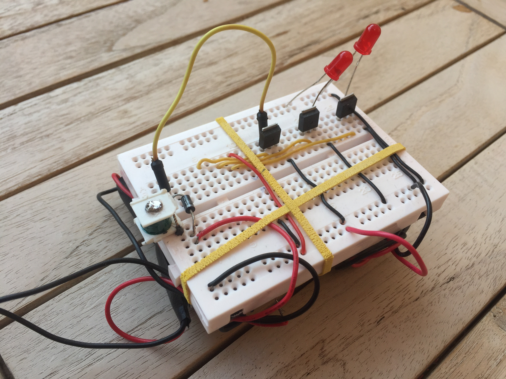
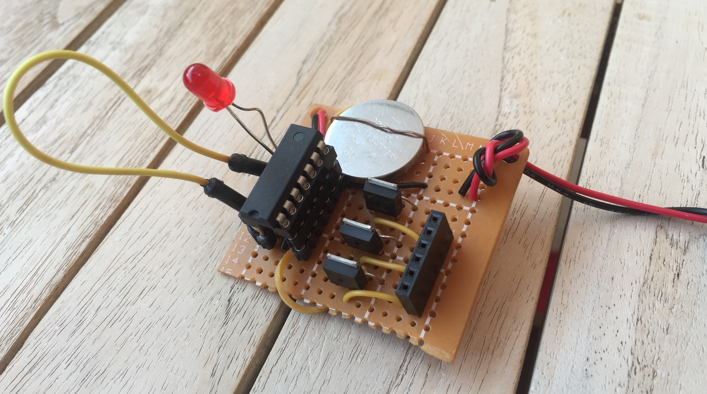
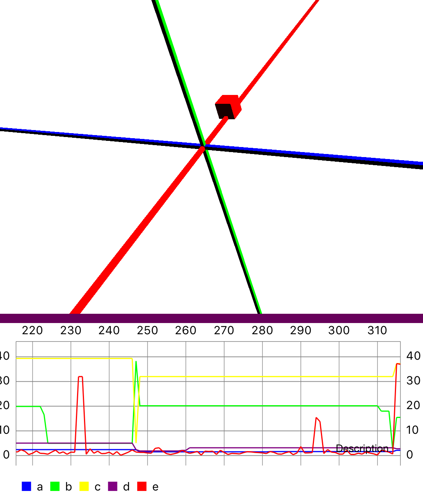
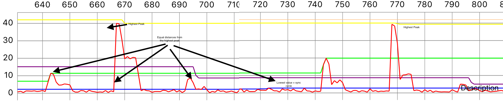

A recent project I was working on required absolute positioning and while waiting for Valves lighthouse and Facebooks to open source it’s tracking solutions I thought I’d take a primitive stab at EM (electro magnetic) positioning using a phone magnetometer purely for the purpose of learning the challenges involved. I’m an experienced software developer and a hobbyist hardware hacker, so I tried solving most problems using software where possible .
EM tracking has an advantage over optical tracking over that it doesn’t need line of sight but most optical tracking systems have overcome this limitation by using two base stations.
All professional EM tracking solutions like products from Polhemus, Ascension and Razor Hydra all use alternating EM fields and a receiving coil to measure induced currents and this allows for turning out or filtering out everything except for the carrier frequency. The down side is the you need more complex hardware/circuits like signal generators/oscillators for the transmitter and with op-amps with high/low pass filters etc on the receiver.
So for stage one I decided to just use the magnetometer sensor on my phone and see how far I can get. As the first step I made a quick prototype using my phone, a relay switch for the transmitter coil and a 9v battery. Due to inverse square law of magnetic field propagation I was only able to get accurate readings up to a centimeter or two.

Always try brute force first, I had to push as much current as possible and needed a bigger coil to create a much stronger magnetic field. First part is easy, 9v batteries are cheap and connect 4 in series and voila you have 36v.
The later is tricky while the EM field generated goes up with number of turns, the longer wire also increases the resistance which decreasing the current passing through. I ended up using a 100MH inductor with 76 Ohm which seems to be a good balance between generated EM field and resistance. This setup created a strong enough field to be detectable up to 5-6 cm which was enough for my project.
The coil would overheat quickly which can be solved by pulsing the coil only long enough for the magnetometer to register it, which turned out to be around 20ms for the one on iPhone 6. Trilateration in 3d requires three points of reference so I got three of these coils transmitting 20ms seconds at a time with the help of a ATTiny and a few MOSFETS.

Due to the lack of wired open input/output ports on the iPhone and lack of wifi/bluetooth on the AtTiny I decided to use a sync cycle to figure out coil is transmitting.
Transmit pulses would be evenly spaced with a empty pulse used as a sync pulse. The rest was signal processing on the iphone, which turned out to be a lot harder than I thought it would be but creating a system to record and playback data so I can rerun and debug with exact dataset helped a lot. Also adding a real time charts and a 3d scene to the iphone app was a great way to visualise what was going on. Another good way to compare the results of two methods (eg: different noise filtering algorithms) was to record videos of each one runnng in the simulator with test data and play it back side by side.

Since the phone is moving all the time, which changes the earth’s magnetic field, each reading had to be normalised against the background using the interquartile_mean.
In order to identify which coil is transmitting, find the highest peak and then find 3 other transmissions equal distance from it, since the time between pulses are known constant, this will give us 4 values and the lowest one will be the sync cycle which can be used to figure out which pulse came from which coil.

Now the intensity at x distance from each coil can be turned into distance from coil based on inverse square law. This is finally used to trilateration and find the absolute coordinates in 3d space relative to the transmitters.
So how well does it track? The answer is not very well, but in true sprit of brute forcing with more power, I ordered some, more accurate MLX90393 magnetometers and hope to combine input from all 3 for a more accurate result and also ordered some A23 12v batteries to push the voltage up to 48v which should improving tracking around the edges.
One more video: https://youtu.be/EHWGtElzWaY
iOS app swift source code:
https://github.com/chris-gunawardena/Absolute-position-EM-tracking-using-iPhone-magnetometer
Arduino Transmitter source code:
| // +-\/-+ | |
| // (+) VCC 1| |14 GND (-) | |
| // coil 1 A00 2| |13 A10 low_pin | |
| // coil 2 A01 3| |12 A09 high_pin | |
| // RESET 4| |11 A08 | |
| // coil 3 A02 5| |10 A07 button_input | |
| // A03 6| |9 A06 led_cathode | |
| // A04 7| |8 A05 led_anode | |
| // +----+ | |
| int low_pin = 10; | |
| int high_pin = 9; | |
| int button_input = 7; | |
| int led_anode = 5; | |
| int led_cathode = 6; | |
| void setup() { | |
| pinMode(0, OUTPUT); pinMode(1, OUTPUT); pinMode(2, OUTPUT); | |
| // used for led | |
| pinMode(led_anode, OUTPUT); digitalWrite(led_anode, LOW); | |
| pinMode(led_cathode, OUTPUT); digitalWrite(led_cathode, LOW); | |
| // button | |
| pinMode(button_input, INPUT); | |
| pinMode(low_pin, OUTPUT); digitalWrite(low_pin, LOW); | |
| pinMode(high_pin, OUTPUT); digitalWrite(high_pin, HIGH); | |
| } | |
| int on_time = 25; //in ms | |
| int refresh_rate = 1; // per second | |
| int pins = 3; | |
| int off_time = (1000 / (refresh_rate * (pins + 1))) - on_time; //in ms (1: 225/25 2:100/25) | |
| void loop() { | |
| for (int pin = 0; pin <= pins; pin++) { | |
| digitalWrite(pin, HIGH); | |
| delay(on_time); | |
| digitalWrite(pin, LOW); | |
| delay(off_time); | |
| } | |
| if (digitalRead(button_input) == HIGH) { | |
| on_time = on_time + 5; | |
| off_time = (1000 / (refresh_rate * (pins + 1))) - on_time; //in ms | |
| int blink_num = on_time / 5; | |
| for (int i = 0; i < blink_num; i++) { | |
| digitalWrite(led_anode, HIGH); // turn the LED on (HIGH is the voltage level) | |
| delay(50); // wait for a second | |
| digitalWrite(led_anode, LOW); // turn the LED off by making the voltage LOW | |
| delay(200); | |
| } | |
| } | |
| } |
Todo:
Just .
References:
https://hackaday.io/project/11865-3d-magnetic-field-scanner
http://rose.eu.org/2014/tag/plume
https://web.archive.org/web/20151002101421/http://home.comcast.net/~traneus/dry_model_1_isca_tracker_electronics.htm
http://www.abrazol.com/books/signals/
https://trmm.net/Lighthouse
https://en.wikipedia.org/wiki/Trilateration
https://www.engineeringforchange.org/uploads/activity/183/183/295/1311176446080/Extremely_low_frequency_electromagnetic_field_detectors_intermediate_Report.pdf
http://www.na-mic.org/Wiki/index.php/Open_Source_Electromagnetic_Trackers
https://airwebreathe.org.uk/doku.php?id=fpga_fan_controller
https://hackaday.io/project/12352-low-field-mri-continued